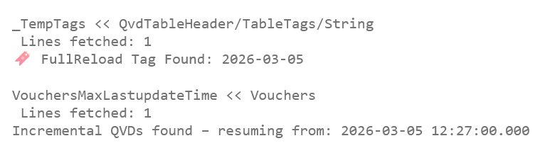

A basic incremental load answers one question: where did we stop last time? But in practice you need to answer a second question too: when did we last do a full reload? Some tables drift — soft-deleted records, updated historical rows, corrected values — and an incremental that runs forever without a periodic full reload will silently accumulate stale data.
Different tables have different tolerances. A transaction table that is append-only can go months without a full reload. A dimension table with frequent corrections might need one every week. The pattern below handles both: it reads the incremental start time from the QVD, and uses a tag stored inside the QVD file itself to decide whether this run should be incremental or full.
Getting the incremental start time
The start time for the next incremental load is the maximum timestamp already in the QVD, plus one millisecond. Reading the entire QVD just to get one value would defeat the purpose, so we load only the timestamp field — and only the distinct values — then aggregate:
MaxEndTimeTemp:
Load Distinct
x as EndTime
From '$(vOutputQVD)'(qvd);
MaxEndTime:
Load
Max(EndTime) AS MaxEndTime
Resident MaxEndTimeTemp;
LET vIncrementalStartTime = Peek('MaxEndTime', 0, 'MaxEndTime') + (1 / 24 / 60 / 60 / 1000);
LET vIncrementalStartTime = Replace(Timestamp('$(vIncrementalStartTime)', 'YYYY-MM-DD hh:mm:ssZ'), ' ', 'T');
DROP TABLES MaxEndTimeTemp, MaxEndTime;
The + (1 / 24 / 60 / 60 / 1000) expression adds exactly one millisecond in
Qlik's internal numeric format — one day divided down to milliseconds. The
Replace(..., ' ', 'T') converts the timestamp into ISO 8601 format
(2026-03-05T12:27:00.000), which most source systems accept in their API
filter parameters.
Tagging the QVD when storing
QVD files can carry arbitrary metadata tags — key-value pairs stored in the file header that survive across reloads and can be read back without loading the data. The idea of using these for reload metadata comes from this article on QlikView Cookbook.
Before storing a table, call this subroutine to write the full reload date into the QVD header:
SUB AddTag(_Table)
IF $(vForceFullReload) = 1 OR $(vIncrementalQVDsAvailable) <> 1 THEN
TAG TABLE $(_Table) WITH 'FullReloadDate=$(vToday)';
ELSE
LET vLastFullReload = Date('$(vLastFullReload)', 'YYYY-MM-DD');
TAG TABLE $(_Table) WITH 'FullReloadDate=$(vLastFullReload)';
END IF;
END SUBIf this is a full reload (either forced or because no QVD existed yet), the tag is set to today's date. If this is an incremental run, the tag carries forward the date of the last full reload — so the tag always reflects when the data was last fully refreshed, not when it was last touched.
Checking whether to do a full reload
The Check_incremental subroutine takes two arguments: the table name and the
maximum number of days allowed since the last full reload. It reads the tag from the QVD,
compares it to today, and sets vForceFullReload accordingly.
SUB Check_incremental(_incrTable, _DaysBack)
// ── Read tags from a QVD file header ──────────────────────────────
SUB LoadTags(_path)
_TempTags:
LOAD
SubField(Tag, '=', 1) AS TagName,
SubField(Tag, '=', 2) AS TagValue
;
LOAD String%Table AS Tag
FROM [$(_path)]
(XmlSimple, table is [QvdTableHeader/TableTags/String])
WHERE String%Table LIKE '*=*';
FOR _i = 0 TO NoOfRows('_TempTags') - 1
LET _vname = 'Tag:' & Peek('TagName', _i, '_TempTags');
LET [$(_vname)] = Peek('TagValue', _i, '_TempTags');
NEXT _i
DROP TABLE _TempTags;
SET _vname=;
SET _i=;
END SUB
// ── Determine QVD availability ─────────────────────────────────────
LET vIncrQVDPath = '$(vOutputQVDName($(vCompany),$(_incrTable)))';
LET vToday = Today(1);
LET vIncrementalQVDsAvailable = If(Len(FileTime('$(vIncrQVDPath)')) > 0, 1, 0);
LET vIncrementalMessage = If($(vIncrementalQVDsAvailable) = 1,
'Incremental QVDs found',
'No Incremental QVDs found. Do not panic. I can fix that.');
// ── Decide full vs incremental based on tag ────────────────────────
IF $(vIncrementalQVDsAvailable) = 1 THEN
CALL LoadTags('$(vIncrQVDPath)');
LET vLastFullReload = '$(Tag:FullReloadDate)';
TRACE 🔖 FullReload Tag Found: $(vLastFullReload);
IF Today(1) - Date('$(vLastFullReload)', 'YYYY-MM-DD') >= _DaysBack THEN
LET vForceFullReload = 1;
ELSE
LET vForceFullReload = 0;
END IF
ELSE
LET vForceFullReload = 1;
ENDIF
END SUB
The LoadTags inner subroutine uses XmlSimple to read the QVD
header directly — no data rows are loaded. Each tag is split on = into a
name and value, then stored as a Qlik variable named Tag:FullReloadDate.
The outer subroutine reads that variable and compares the date to _DaysBack.
Using it in the script
Call Check_incremental before loading each table, passing the table name and
your desired full reload interval in days. :
// Full reload every 7 days, incremental otherwise
CALL Check_incremental('Vouchers', 7);
Awesome Qlik code right here...
CALL AddTag('Vouchers');
Different tables get different intervals simply by changing the second argument:
CALL Check_incremental('Vouchers', 7); // full reload weekly
CALL Check_incremental('Transactions', 100); // full reload every ~3 months
CALL Check_incremental('Customers', 14); // full reload every two weeksWhat the reload log looks like

The log confirms that the tag was read (FullReload Tag Found: 2026-03-05),
the QVD exists, and the incremental start time was resolved to
2026-03-05 12:27:00.000 — the millisecond after the last record in the QVD.
If the tag had been older than _DaysBack days, the log would show a full
reload instead.
- vToday is set to today's date. This is created in Check_incremental subroutine.
- This code has a variables called vOutputQVDName, which can we exchanged to march you QVD search path..